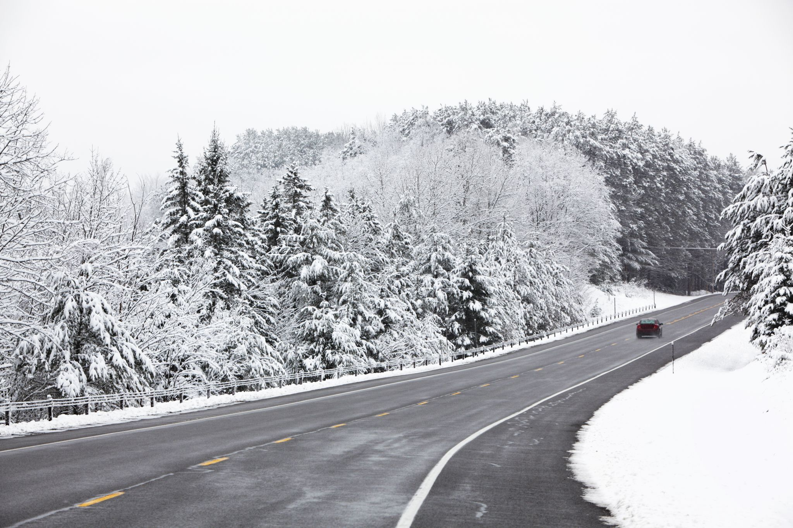
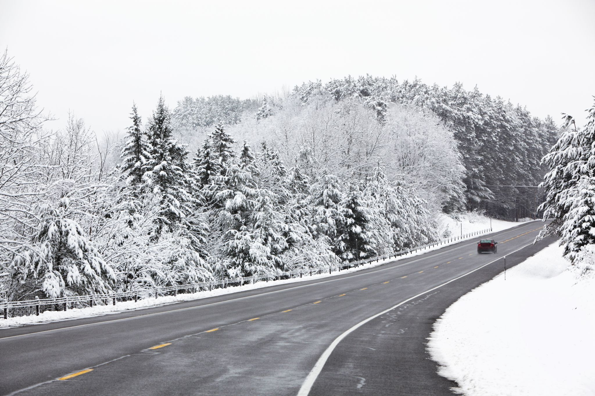

Light Mode
Dark Mode
Niagara Falls


Geographical Location: North America
Niagara Falls is located on the border between Canada and the United States. Connecting Lake Erie and Lake Ontario, Niagara Falls has the highest flow rate of any waterfall in North America.
Niagara Falls draws in thousands of visitors every year, and for good reason. As such, there are numerous things that you can see while you visit the falls, and it is very easy to make a full trip out of seeing this wonderful sight.
Photo Gallery

The 'Horseshoe'

A rainbow touching down in the falls

A sunset overlooking the falls

A colorful view of Niagara Falls

A distant look at Niagara Falls
Yellowstone National Park


Geographical Location: North America
Yellowstone National Park is located in the United States, primarily in Wyoming, but also in Montana and Idaho. It is the first national park in the United States, and is known for its wildlife and geothermal features.
Yellowstone National Park is a great place to visit if you are interested in seeing wildlife. It is home to many different species of animals, including bison, elk, wolves, and bears. It is also home to many different geothermal features, including geysers, hot springs, and mud pots.
Photo Gallery

Yellowstone Travertine

Sulphur Springs
Vermont
 

Geographical Location: North America
Vermont is a state in the United States. It is known for its beautiful scenery, including its mountains and lakes. It is also known for its maple syrup.
Vermont is a great place to visit if you are interested in seeing beautiful scenery. It is home to many different species of animals, including bison, elk, wolves, and bears. It is also home to many different geothermal features, including geysers, hot springs, and mud pots.
Photo Gallery
Maple Syrup
Snowy Road